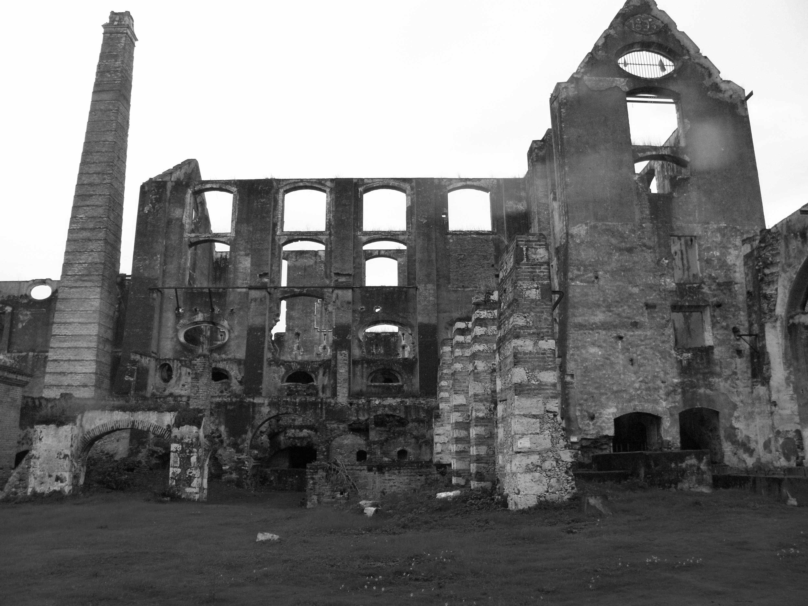

<!DOCTYPE html>
<html lang="es"></html>
<head>
  <meta charset="UTF-8"/>
  <title>Ex-hacienda</title>
  <link rel="stylesheet" href="css/normalize.css"/>
  <link rel="stylesheet" href="css/estilo.css"/>
</head>
<body>
  <header>
    <h1>Ex-hacienda Coahuixtla</h1>
    <nav>
      <ul>
        <li>Inicio</li>
        <li>Historia</li>
        <li>Espacio</li>
        <li>Leyenda </li>
        <li>Ubicacion</li>
      </ul>
    </nav>
  </header>
  <section class="inicio"><a href="#">Conocida en nuestro tiempo como la ex Hacienda de Coahuixtla, se encuentre en san pedro Apatlaco, en la ciudad, de Ayala, y fue edificada en 1587, por frailes dominicos. Pero antes de ser famosa, fue escenario de batallas reales entre los soldados del general elimino zapata y las fuerzas federales, en el ocaso del Porfiriato</a></section>
  <section class="historia"><a href="#">La Hacienda de San Antonio Coahuixtla empieza su existencia con la fundación del Trapiche de tracción animal a cargo de los Frailes Dominicos en el año de 1580. La Orden de Santo Domingo pagó $ 1,185.00 pesos por el ingenio fundado en los terrenos de los habitantes de Anenecuilco.</a></section>
  <section class="espacios"><a href="#">Una vez en el interior del Casco de la Hacienda se pueden apreciar cinco diferentes zonas que conforman la Hacienda.El Ingenio, La Casa Grande, La Fábrica de Aguardiente y Tienda de raya, Los Talleres, Establos, Caballerizas y Macheros.</a></section>
  <section class="leyenda"><a href="#">La colosal Hacienda de Coahuixtla también es cuna de leyendas, como la del “Hijo del Diablo”, que tiene más de 100 años de antigüedad.</a></section>
  <section class="ubicacion"></section>
</body>